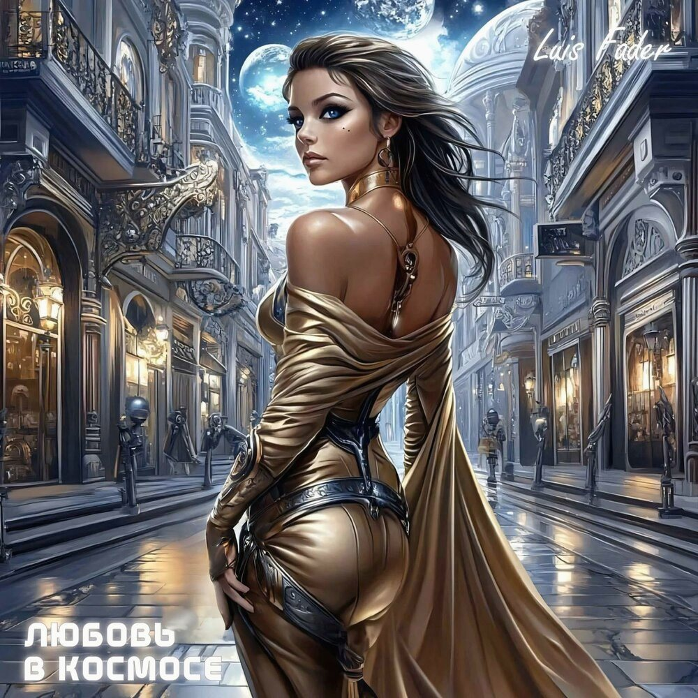

Haz clic en una canción para abrir la letra.
Letra

Universo musical · italiano para escuchar y cantar
Una experiencia pastel, íntima y cinematográfica para aprender con música, imágenes y letra.
Letra
Haz clic en una canción para abrir la letra.